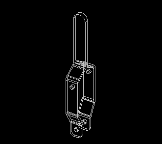
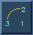
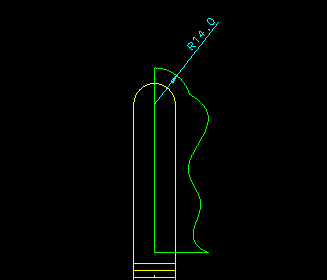

(Demonstrator 2)
| Next Step | Return to Table of Contents | Previous Step |

Extrude: Handle_View_1 (more complicated
shape)a Distance of 16 (Can be measured from Handle_View_2 geometry).
|
|
Extrude: Handle_View_2 geometry as a thicken and Intersect with Handle_View_1 extrusion.


Change the part color to Gray 80 80 80
Pick the Handle_View_1 extrusion
Double Click a part edge Color Gray 80 80 80

 Rename
the part on the screen to be Handle
Rename
the part on the screen to be Handle
 Change to the
Front View
Change to the
Front View

Start line at point 1, focus
on center point 2, continue with actual line at point 3,
finish line at point 4


Ground curve end at point 3

Draw an arc centered on the vertical lineFinish on line

Trim the vertical line back to meet
the arc (not the arc end)Move the arc dimension to a location outside of
the arc

Create a spline from the arc end using approx. 4 mid points -> to line end. (Note:- Spline constraint options are OFF)


Match the spline curvature to the arcPick arcPick spline

Use Drag to change the arc radius
and the spline to suit (PLAY WITH IT)
Revolve the section around the vertical line

 Putaway
the Handle
Putaway
the Handle
 Delete
the remaing point on the workbench
Delete
the remaing point on the workbench
| Next Step | Return to Table of Contents | Previous Step |